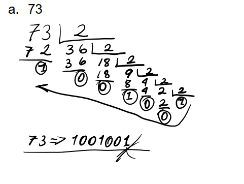
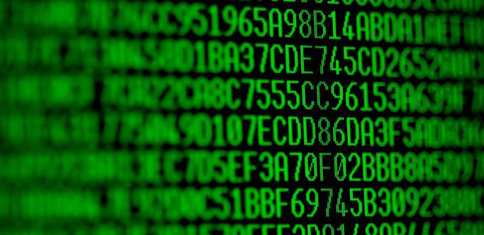
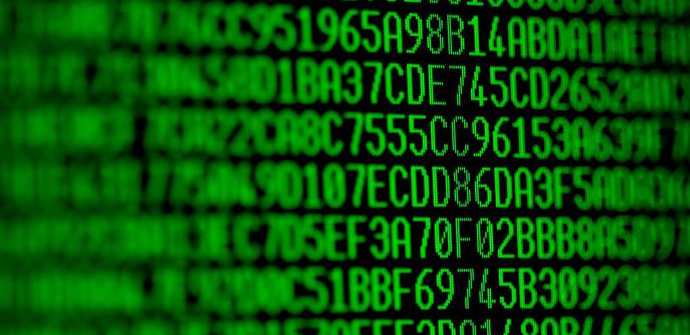
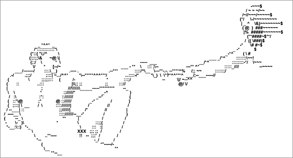
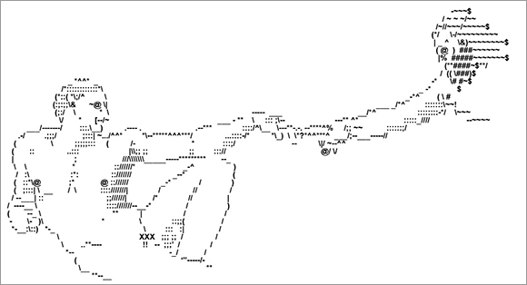

Sistemas numéricos y Tipos de Códigos
Sistemas numéricos
Primero empecemos con lo básico. Una computadora conoce su desarrollo gracias al campo de las matemáticas, en este caso el campo discreto nos ha otorgado el lenguaje que permite manipular los datos y automatizar procesos. En este caso, es la implementación de un sistema numérico
Un sistema numérico es una composición de símbolos y reglas de generación que, gracias a estos, podemos representar todos los números.
Teóricamente hay infinitos sistemas numéricos, pero algunos destacados por su empleo en distintas áreas tenemos el Decimal (Base-10), Binario (Base-2), Hexadecimal (Base-16) u Octal (Base-8).
Los sistemas numéricos surgen casi a la par con la sedentarización de la humanidad, es decir, aquello que permitió formar las primeras civilizaciones. Uno de los primeros sistemas numéricos que se conocen es el babilónico o sumerio, un sistema posicional (en el que el orden de aparición del símbolo utilizado para numerar es importante para determinar cantidad), de base 60 (que tenían 60 símbolos diferentes para determinar la cantidad).
Resultan, evidentemente, de una necesidad. Al volverse la humanidad sedentaria, ha comenzado a tener nuevas necesidades que le permitieran hacer sus labores más sencillas. La parametrización de las posesiones, por dar un ejemplo, habría sido imposible sin una invención abstracta como lo es un sistema numérico. Así, el hombre sedentario ha podido determinar la cantidad de cultivo cosechado, por ejemplo. En general, nuevas invenciones y construcciones abstraídas de la realidad (como me gusta más llamar a los sistemas numéricos) son fabricadas en vista de una necesidad.
Es importante saber convertir bases numéricas. Poder calcular correctamente sus correspondientes equivalencias. Una conversión común es la Decimal-Binaria.
Tipos de Códigos
El computador hace uso de la codificación para poder conocer el concepto mismo de dato. Algunos ejemplos destacables tenemos:
BCD
Es una clase de codificación binaria de números decimales donde cada dígito es representado por una cantidad fija de bits, usualmente cuatro u ocho. En ocasiones, son utilizados patrones de bits especiales para denotar el signo u otras indicaciones como un error o un overflow.
Para representar cualquier número en BCD, hay que convertir cada dígito en el cuarteto de bits que representa en la codificación. Por ejemplo: 4358 se representaría así: 0100 0011 0101 1000
Exceso 3
Es una codificación derivada de BCD autocomplementaria que ha sido utilizada en ocasiones en reemplazo de BCD por su conveniencia. El código de Exceso 3 se consigue igual que como el BCD, pero cada dígito debe sumarse 3 para poder conseguir el número correspondiente.
Por ejemplo: En el número 4358, se suma 3 a cada dígito y convertimos cada dígito a binario: 0111 0110 1000 1011
Gray
Es un sistema de codificación binario en el que dos números consecutivos difieren en uno de sus dígitos. Si por ejemplo tenemos el número 0000 y 0001, el siguiente número no puede ser 0010, porque este difiere en dos dígitos con respecto al número 0001, por lo que se dice que el siguiente número es 0011, que sólo modifica un dígito.
ASCII
Es un código de caracteres que otorga un número (normalmente binario, al tratarse de una codificación usada en computación) a un carácter en el alfabeto latino, específicamente los utilizados en el inglés moderno. Este usa 7 bits para representar cada uno de los caracteres hechos disponibles. Como la computación ha avanzado a ámbitos internacionales, resultaba necesaria la ampliación del sistema de codificación para dar cabida a otros idiomas, y por ello se extendieron las capacidades del ASCII siendo retrocompatible con esta. Esta ampliación es lo que conocemos como ASCII Extendido.
 

 
